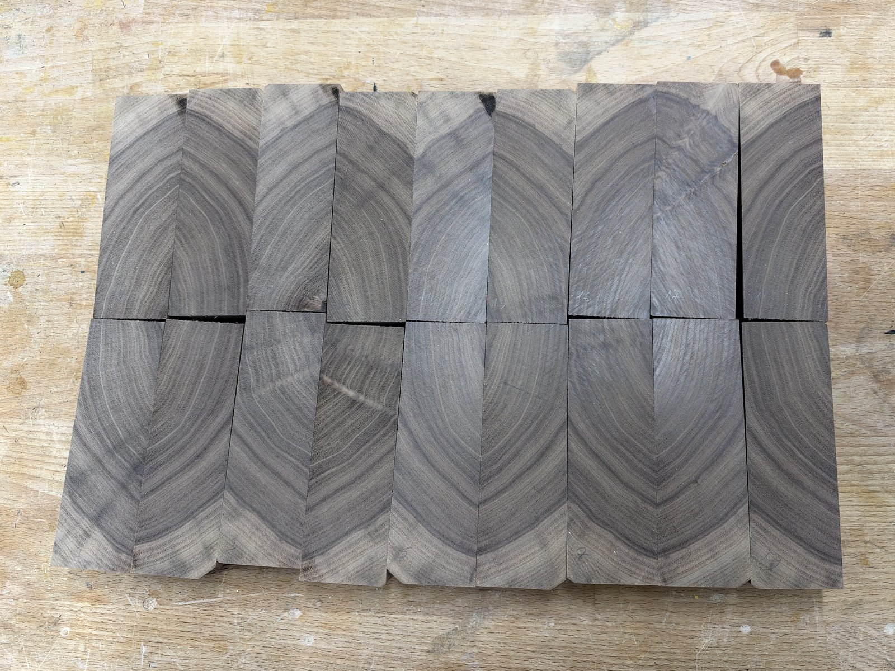
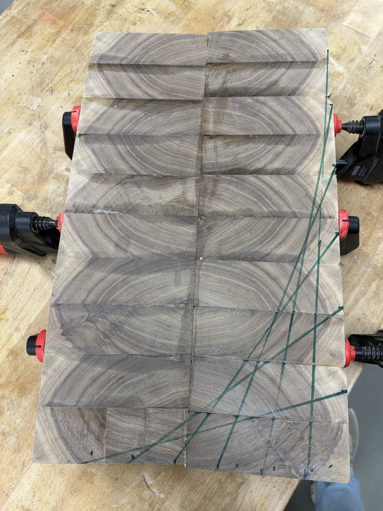
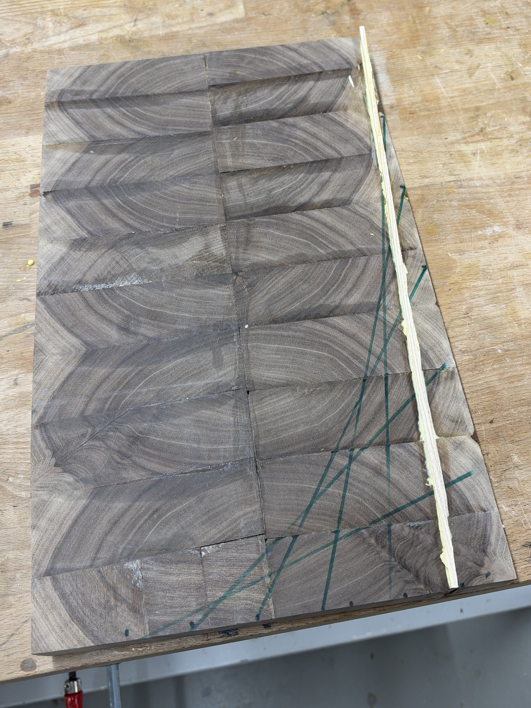
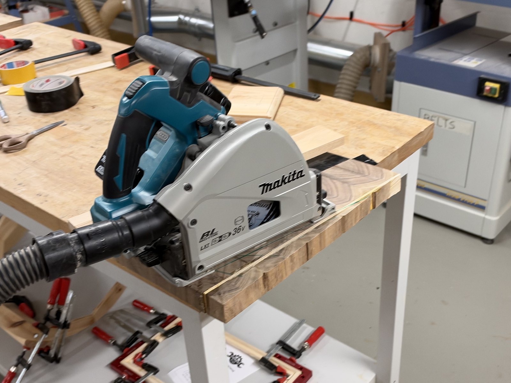
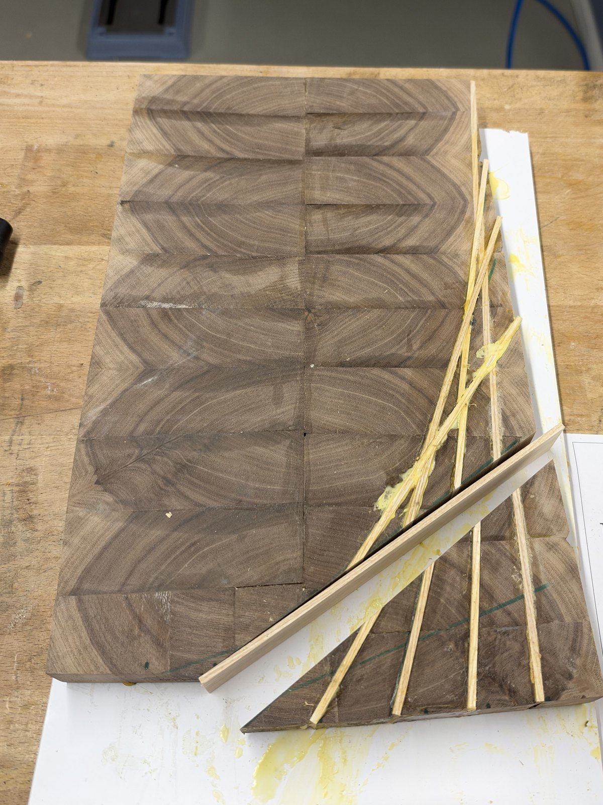

Projet 08 • Tissage Tangentiel Parabolique / Billot en Bois de Bout
Billot Géométrique en Bois de Bout Noyer & Frêne
Une planche à découper en bois de bout de 27 cm × 37 cm × 27 mm mariant 20 blocs de noyer européen (Juglans regia) appareillés en livre ouvert à six rayons d'incrustation sécants en frêne européen (Fraxinus excelsior). Usinée par coupes plongeantes guidées successives pour dessiner une enveloppe parabolique sur un veinage en ogives.
Spécifications du Projet & Paramètres d'Atelier
Dimensions finales
27,0 cm de largeur × 37,0 cm de longueur × 27 mm (2,7 cm) d'épaisseur
Architecture du fil
Matrice en vrai bois de bout — Fibres verticales de noyer associées à des filets tangentiels sécants en bois de fil de frêne
Appareillage des blocs
20 blocs de noyer en livre ouvert disposés en 2 colonnes × 10 rangées formant des ogives symétriques
Motif géométrique
Enveloppe tangentielle parabolique à 6 rayons — Droites reliant des divisions équidistantes pour générer une courbe de Bézier
Titebond III Ultimate (résine aliphatique imperméable ANSI/HPVA Type I, apte au contact alimentaire indirect)
Outillage de coupe & serrage
Scie plongeante sans fil Makita 36V (2×18V) contre règle rectifiée bridée, dormants parallèles Bessey K-Body REVO & serre-joints en F
Protocole d'incrustation
Remplacement itératif du trait de scie — couper, coller, sécher et affleurer chaque rayon de frêne avant le vecteur suivant
Séquence de ponçage
Mise au format puis ponçage orbital progressif : grain 80 → 120 → 180 → 240 (mouillage à l'eau distillée) → 320
Finition protectrice
Saturation capillaire à l'huile minérale USP & baume à la cire d'abeille bio suisse Holz-Butter
Origine d'atelier
Zurich, Suisse
Transformation Interactive de Surface
Collage Brut à 6 Rayons vs. Géométrie Équerrée & Poncée Fin
Faites glisser le curseur central pour comparer le panneau brut tout juste sorti des serre-joints — avec ses baguettes de frêne débordantes et ses bourrelets de colle — à la planche équerrée, surfacée et polie au grain 320.
Récit chronologique en 17 photographies centrées et vidéo HD : appareillage en ogives, collage en double colonne, tracé tangentiel et tissage séquentiel des six rayons de frêne.
Étape 01Chorégraphie du Veinage
Appareillage en Livre Ouvert de 20 Blocs de Noyer en Ogives
Toute composition géométrique réussie commence bien avant la première incrustation par une sélection rigoureuse du fil. Vingt épais pavés en bois de bout de noyer européen (Juglans regia) ont été débités dans la continuité du plateau puis disposés en deux colonnes de dix rangées.
En retournant les blocs adjacents par paires symétriques, les cernes annuels se rejoignent sur le joint central pour dessiner des arcs gothiques et des médaillons en losange, tout en équilibrant les tensions hygroscopiques sur les 27 cm de largeur.

Chorégraphie symétrique des cernes annuels sur les 20 pavés avant collage.Cliquer pour agrandir
Lorsque des tranches successives d'un même équarri de noyer sont ouvertes en livre, les cernes de bois de printemps et d'été s'alignent au dixième de millimètre le long du joint, transformant la croissance naturelle de l'arbre en architecture symétrique tout en neutralisant le tuilage.
Étape 02Mise en Place & Montage à Blanc
Préparation en Double Colonne & Réglage des Dormants Parallèles
Plutôt que de risquer le glissement simultané de 20 pavés fraîchement encollés, la matrice a été scindée en deux barres linéaires de 10 blocs chacune, dressées contre une règle rectifiée sur un dormant parallèle Bessey K-Body REVO.
Un serrage à blanc a permis de vérifier la fermeture hermétique de chaque joint sans le moindre jour avant l'application de la colle.
Les mors parallèles garantissent un alignement axial rigoureux sur 37 cm.Cliquer pour agrandir
Inspection finale à sec confirmant des raccords de veinage impeccables.Cliquer pour agrandir
Étape 03Première Stratification
Mouillage des Fibres de Bout & Collage des Colonnes
De généreux cordons de résine aliphatique imperméable Titebond III Ultimate ont été déposés sur les faces de contact des pavés de noyer directement posés sur l'âme en acier du dormant.
À l'aide d'un pinceau en silicone souple, la colle a été étalée en un film continu et régulier sur toute la surface afin de saturer les trachéides ouvertes et d'éviter tout joint maigre.
Encollage méthodique directement sur la barre du dormant parallèle.Cliquer pour agrandir
Étape 04Assemblage du Panneau Maître
Réunion des Deux Colonnes de 10 Blocs sur le Joint Central
Après 24 heures de polymérisation, les chants intérieurs des deux barres de 10 blocs ont été dégauchis d'équerre pour créer une ligne de joint centrale parfaitement rectiligne.
Posées sur un panneau de mélaminé blanc antiadhésif, les deux moitiés ont reçu un cordon continu de Titebond III avant d'être réunies en une dalle monolithique en bois de bout.
Cordon d'encollage central prêt à être étalé et serré.Cliquer pour agrandir
Étape 05Tracé Mathématique
Tracé de l'Enveloppe Tangentielle Parabolique à 6 Rayons
Une fois les deux colonnes bridées sous de robustes serre-joints en F, l'épure géométrique des incrustations a été tracée au marqueur vert directement sur le bois de bout brut.
Six repères équidistants sur le chant inférieur ont été reliés séquentiellement à six repères équidistants sur le chant droit (1 à 1, 2 à 2, jusqu'à 6 à 6). L'enveloppe intérieure de ces six droites dessine une élégante parabole de Bézier quadratique.

Des segments rectilignes reliant des pas réguliers font émerger une courbe parabolique fluide.Cliquer pour agrandir
Théorie géométrique : Des coupes droites pour une courbe pure
En géométrie projective, relier des graduations régulières sur deux axes sécants engendre l'enveloppe tangentielle d'une parabole. Bien que chaque trait de scie et chaque filet de frêne soit rigoureusement rectiligne, l'œil perçoit une courbe tendue dialoguant avec les ogives du noyer.
Étape 06Rayon d'Incrustation 01
Première Coupe Traversante & Stratification du Premier Filet de Frêne
La séquence débute par le rayon extérieur le plus incliné. Après avoir scié la dalle de noyer de part en part le long du premier tracé, une baguette calibrée de frêne européen (Fraxinus excelsior) blond clair a été collée entre les deux parties.
Une fois la colle prise, les débords sont affleurés afin que le panneau retrouve son intégrité monolithique avant d'entamer la coupe sécante suivante.

Rayon 01 achevé : un contraste graphique franc entre le frêne blond et le noyer chocolat.Cliquer pour agrandir
Étape 07Sciage Plongeant Guidé
Bridage du Guide Rectiligne & Coupes à la Scie Plongeante Makita 36V
Trancher en biais un panneau de bois de bout de 27 mm d'épaisseur exige un guidage infaillible pour éviter toute déviation de lame. Pour chaque rayon, une règle en bois dur dégauchie a été bridée sur l'établi exactement selon l'angle du tracé.
Glissant le long de ce guide fixe avec aspiration reliée, la scie plongeante sans fil Makita 36V (2×18V) brushless a sectionné net le noyer de bout ainsi que les filets de frêne déjà incrustés, laissant des chants glacés prêts à coller.
Le guide bridé élimine tout risque de dérive latérale lors de l'attaque en angle aigu.Cliquer pour agrandir

Coupe plongeante au carbure nette et sans éclats à travers le noyer et les filets précédents.Cliquer pour agrandir
Étape 08Compensation du Trait de Scie
Filets de Frêne Calibrés au Trait de Lame & Serrage Anti-Glissement
Lorsqu'une lame de scie traverse en biais un filet déjà incrusté, l'épaisseur de matière emportée par le trait de scie (~2,2 mm) décalerait latéralement les deux tronçons du filet précédent — sauf si la nouvelle baguette de frêne compense très exactement la largeur du trait de scie !
En calibrant chaque baguette de frêne à l'épaisseur exacte du trait de lame, les rayons antérieurs conservent un alignement colinéaire parfait à chaque croisement. Une cale d'arrêt inférieure et un serre-joint Bessey diagonal neutralisent tout glissement hydraulique au serrage.
Calibrer le frêne à la largeur exacte de la lame préserve la continuité visuelle des lignes coupées.Cliquer pour agrandir
Géométrie de serrage croisée verrouillant simultanément la pression normale et l'alignement longitudinal.Cliquer pour agrandir
La règle d'or des incrustations sécantes : Égaler le trait de scie
Si la baguette insérée est plus épaisse ou plus fine que le trait de scie, chaque filet coupé précédemment subira un décrochement en escalier au point d'intersection. L'égalité stricte entre trait de lame et épaisseur d'incrustation garantit des croisements d'une rectitude absolue.
Étape 09Tissage des Rayons 04 à 06
Cycles Séquentiels de Coupe et Polymérisation du Réseau Parabolique
Puisque chaque nouvelle coupe recoupe l'ensemble des filets précédents, il est impossible de coller deux rayons sécants simultanément : chaque vecteur exige son propre cycle complet de sciage, encollage double face, serrage et séchage.
Au fil des rayons 04, 05 et 06, le coin triangulaire détaché devient une véritable mosaïque miniature de bois de bout de noyer et de sections de frêne. Dressées verticalement sur la plaque mélaminée, les deux parois reçoivent un film homogène de Titebond III avant l'insertion du sixième et dernier rayon.
L'encollage des deux faces évite toute poche sèche dans les pores du bois de bout.Cliquer pour agrandir

Cinq vecteurs convergents sans le moindre désalignement aux nœuds d'intersection.Cliquer pour agrandir
Croisements multiples d'une grande finesse dans le quadrant inférieur droit.Cliquer pour agrandir
L'ultime collage venant clore le tissage tangentiel parabolique.Cliquer pour agrandir
Étape 10Surfaçage, Ponçage & Révélation
Mise au Format, Polissage au Grain 320 & Présentation Finale
Libéré de son dernier serrage, le panneau brut révèle les six rayons de frêne européen définitivement prisonniers du bois de bout de noyer. Les extrémités saillantes et les cordons de colle durcie ont été affleurés, puis les quatre chants ont été équerrés aux cotes finales : 27 cm × 37 cm × 27 mm.
Après mise à plat et ponçage orbital progressif du grain 80 au grain 240, un léger mouillage à l'eau distillée a relevé les fibres comprimées avant un polissage soyeux au grain 320, suivi d'une saturation à l'huile minérale USP et au baume suisse Holz-Butter.
Le panneau brut au sortir du sixième cycle de pressage.Cliquer pour agrandir
Équilibre final : veinage cathédrale du noyer et faisceau parabolique en frêne européen.Cliquer pour agrandir
Vidéo d'atelier : Panoramique rapproché sur les ogives en bois de bout de noyer et la finesse des croisements en frêne.Vidéo HD (12 s)
Science du Bois & Géométrie
Contraste Matériel & Harmonie Structurelle
Associer le velouté sombre du noyer de bout à la nervosité lumineuse du frêne européen exige un équilibre de dureté et une précision d'usinage rigoureuse.
Noyer Suisse / Européen
Juglans regia
Prisé pour son duramen brun chocolat et ses cernes expressifs. Orienté en bois de bout, son faisceau vertical accueille le tranchant des couteaux de chef sans l'émousser et se referme naturellement.
Dureté Janka
1 010 lbf
Rôle
Matrice de 20 Blocs
Frêne Européen
Fraxinus excelsior
Feuillu européen nerveux et résilient à zone poreuse, traditionnellement choisi pour les manches d'outils et le cintrage. Sa teinte blonde lumineuse trace des lignes graphiques nettes dans le noyer.
Dureté Janka
1 320 lbf
Rôle
6 Rayons Tangentiels
Enveloppe Parabolique
Géométrie Projective
Six coupes rectilignes reliant des graduations régulières sur deux chants perpendiculaires engendrent une courbe de Bézier quadratique — démontrant que la ligne droite peut sculpter la courbe.
Incrustations
6 Vecteurs Droits
Intersections
15 Nœuds Francs
Index Visuel
Galerie Complète des 17 Étapes
Cliquez sur chaque photographie centrée en haute résolution pour examiner l'appareillage des cernes, le guidage de coupe et les croisements.